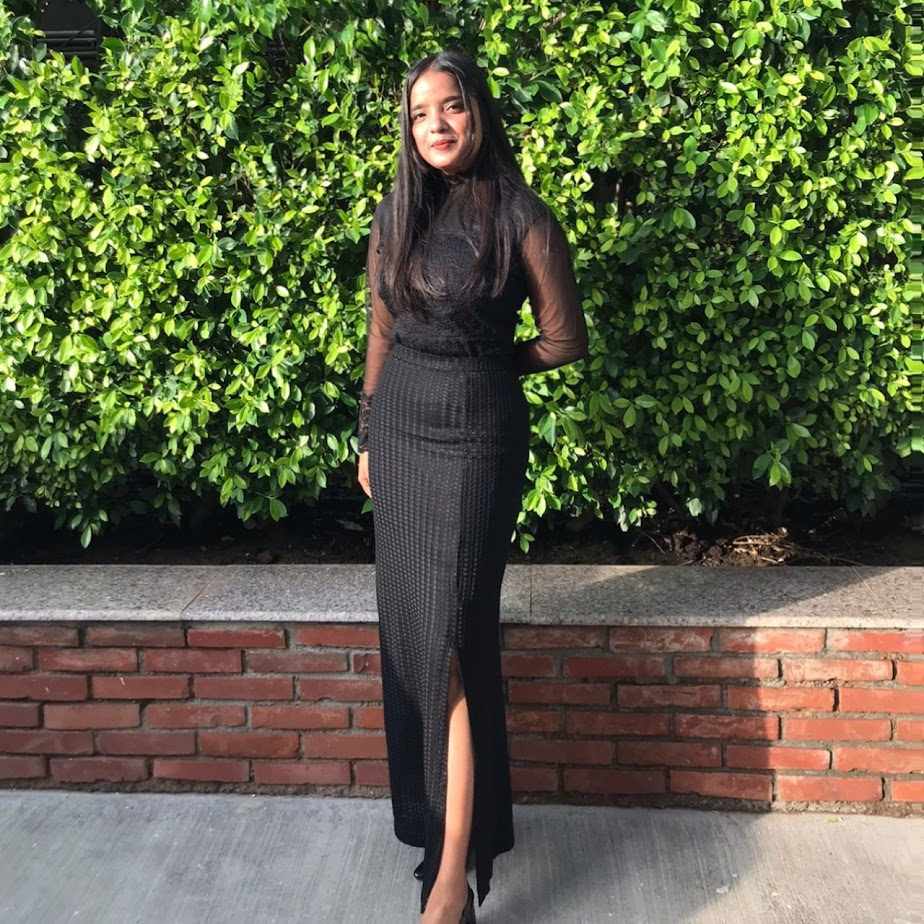

Hi! My name is Saloni Sikriwal
I am a student at Sharda University and a passionate learner.

Experiences

PYTHON PROGRAMMER
I have been offered an internship at CODSOFT as a Web Developer Intern
I have achieved Certificates after the completion of the tasks

WEB DEVELOPER
I have made one website known as AMAH (automatic medical application handler)in which I had used Python and html css

LEARNER
Fast Learner
Focused and Sincere towards my work
Had a knowledge on Time Management
Curious to learn a new skill
Always Implement practical innovative solutions